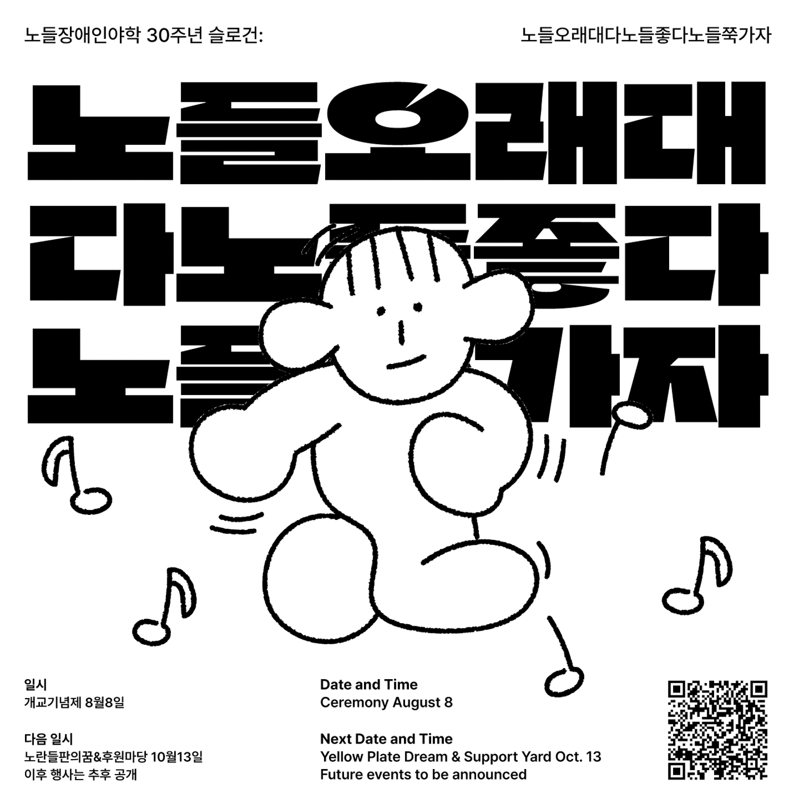

일로 만난 사이
2022년 노들장애인야학 권리중심공공일자리 노동자들의 노동 하는 일상, 노동으로 맺은 관계에 대한 이야기를 담은 다큐멘터리입니다.
장호경, 2023
23. 6. 17(토) 노들야학 30주년 운동회가 예정되어 있습니다.
노들야학의 30주년 소식지를 구독하세요!
23. 06. 27(화)까지 [노들야학 30주년, 나와 노들야학의 이야기, 노들야학에 보내는 편지]를 주제로 백일장을 진행합니다.
🍄 ‘희망을 일구는 사람들의 터’ 노들장애인야학으로 초대합니다.
만약 당신이 나를 도우러 여기에 오셨다면,
당신은 시간을 낭비하고 있는 겁니다.
그러나 만약 당신이 여기에 온 이유가
당신의 해방이 나의 해방과 긴밀하게 결합되어 있기 때문이라면,
그렇다면 함께 일해 봅시다.
(+)(–)
- 멕시코 치아파스의 어느 원주민 여성
혜화역 2번출구로 나와 마로니에공원을 가로지르면
노들장애인야학(野學)이 있습니다.
야학에서 우리는 함께 공부하고 춤을 추고 노래도 부르고 구호도
외칩니다.
누구와 겨룰 필요도, 이길 필요도 없습니다.
당신이 어떤 모습이든, 당신이 쓰는 언어가 무엇이든.
당신의 옷차림이라든지, 당신의 말투라든지.
당신의 걸음걸이가 어떻든지.
당신이 휠체어를 이용하든지 하지 않든지.
우리는 함께 노동하고 공부하며 세상을 바꿔나갑니다.
조금씩 조금씩 세상의 질서를 무너뜨립니다.
그런 노들장애인야학이 30주년을 맞았습니다.
1993년 아차산 정립회관에서부터 2023년 동숭동 유리빌딩까지
지역사회에서 함께 살아가기 위하여 투쟁하며
노란들판을 일구었습니다.
그리고 앞으로 30년도 노들은 이 곳에 있을 겁니다.
밑불이 되고 불씨가 되어.
장애인의 권리가 비장애인과 동등하게 실현될 그 날까지.
우리의 교육과 투쟁의 역사 30주년,
앞으로 장애인을 포함한 모든 사람이 자유롭고 평등한 세상을 만들
때까지
노들장애인야학의 역사는 이어질 것입니다.
'당신의 해방과 나의 해방이 연결된 공간', 노들야학이 30주년을 맞이했습니다.

안녕하세요, 노들장애인야학입니다.
2023년 올해, 노들야학이 30주년을 맞이했습니다. 1993년 8월 8일 처음 학교의 문을 연 노들야학은 지난 30년동안 단지 '장애'가 있다는 이유로 제대로된 교육의 권리조차도 누리지 못한 이들과 함께 하며 배움과 투쟁의 일상을 보내왔습니다.
1993년 아차산 정립회관에서부터 지금의 동숭동 유리빌딩에 이르기까지의 시간 30년. 비장애인 중심의 사회구조 속에서 분명 쉽지 않은 시간들이었지만, 우리는 꿋꿋이 차별에 맞서 싸우며 세상을 조금씩 바꿔왔습니다.
그리고 그 긴 시간동안 노들이라는 ‘희망의 터’를 지켜올 수 있었던 것은 야학을 통해 연결될 수 있었던 수많은 학생, 교사, 동문, 후원인분들의 든든한 지지와 연대가 있었기 때문입니다.
그렇기에 올해 노들야학은 우리 모두가 함께 지난 30년을 기념하고, 또 앞으로의 30년을 같이 꿈꿔볼 수 있는 특별한 자리들을 더욱 많이 준비해보려 합니다.
오는 8월 8일에는 그 어느 때보다도 특별할 [30주년 개교기념제]가, 10월 13일에는 노들의 30주년을 다함께 축하하는 [노란들판의 꿈]과 학생무상급식을 위한 후원행사 [평등한 밥상]이 기다리고 있습니다.
아울러 올해는 [노들에스쁘와], [노들 쿵쿵차카차카] 등 권리중심공공일자리에 참여하고 있는 학생분들의 문화예술활동을 함께 느끼고 즐길 수 있는 자리들을 많이 준비하고 있습니다.
매일매일이 축제이자 잔치가 될 노들야학의 2023년. 모쪼록 많은 관심과 참여 부탁드립니다. 노들장애인야학의 30주년을 함께 축하해주세요! 그리고 함께 세상을 바꿔봅시다.

🔔 본격적인 행사에 앞서 노들야학의 30주년을 대표할 수 있는 슬로건을 정해보고자 했습니다. 30주년을 맞이한 노들야학이 야학의 안과 밖 사람들에게 꼭 이야기하고 싶은 진솔한 내용을 짧은 문구로 표현해보는 것이었죠. 그렇게 지난 3월 한 달 동안의 슬로건 공모를 통해 야학 학생, 교사, 활동지원사 등은 물론 야학 안밖의 많은 분들에게서도 여러 다양하고 소중한 의견들을 들어볼 수 있었습니다.
그 결과 개성 넘치고 재밌기도 혹은 사뭇 진지하디도 한 여러 제안들이 많았습니다. 그 중에서도 특히 청솔 3반 최원균 학생이 응모한 “노들오래대다노들좋다노들쭉가자”가 번뜩 모두의 눈과 귀를 사로잡았습니다.
사실 원균의 슬로건은 맞춤법도 띄어쓰기도 다소 틀린 문장이지만, 슬로건 속 원균의 당찬 목소리와 야학을 아끼고 좋아하는 마음이 너무나 잘 느껴진다고 생각했어요. 직접 입으로 연이어서 말해보면 마치 구호 같기도 하구요.
그리고 실제로 야학의 30주년과 다 뜻이 통하고 연결되는 말들이기도 해요. 말그대로 노들은 오래되었고, 노들은 좋고, 앞으로도 노들이 쭉 가길 우리 모두가 바라니까요.
그렇게 모두의 의견이 만장일치가 되어 “노들오래대다노들좋다노들쭉가자”가 빠르게 올 한해 노들야학의 30주년을 대표할 슬로건으로 선정되었습니다.
올해 여러 행사들 속에서 우리의 슬로건이 더욱 그 빛을 발하길, 당사자의 당당한 목소리로 외쳐지길, 그리고 다들 흠뻑 좋아해주시길 바래봅니다.
(+)(–)
사진 한 가운데 정체를 알 수 없는 포즈(?)를 취하며 기뻐하고 있는
사람이 이번 30주년 슬로건의 주인공 청솔 3반 최원균 님입니다.
"노들오래대다노들좋다노들쭉가자!" 원균님의 슬로건 모두
좋아해주실 거라 믿어요!

“노래만들고 노래부르고 연주도하고 춤도추지요
쉽지않지만 잘만들어요 잘안될때는 노력합니다
노래불러요 노들노래공장
불러주세요 노들노래공장 우리가간다”
노들 노래 공장(노노공)은 노들 야학의 권리중심 중증장애인맞춤형 공공일자리에서 일하는 노동자들이 2022년 2월부터 매주 한 번 함께 모여서 노래를 만드는 곳입니다. 노노공의 기조는 “우리의 노래 우리가 만든다“로, 하고 싶은 이야기를 노래라는 방식으로, 스스로 노랫말과 가락을 지어 부른다는 목표를 가지고 있습니다.
올해 4월, 노노공의 그동안 작업물들을 모아 홈페이지 nonogong.kr 방문하기 를 오픈했습니다!
노노공에서 만든 노래와 악보, 음원, 영상을 보실 수 있고, 노노공 소개와 구성원들 소개도 담겨있어요. 매주 노래를 만드는 노노공에 신청곡을 의뢰할 수도 있으니, 꼭 한번씩 들어오셔서 노래도 들어보시고 노래도 신청해주세요.
노래는 만들때마다 새롭게 업데이트 됩니다!
한국 장애해방운동의 상징과도 같은 노들야학은 개교 30주년을 맞아 이미 이곳저곳에서 많은 주목을 받고 있답니다! 이번 30주년 소식지에서는 지난 4월 24일 한겨레 신문에 실린 천성호, 김명학 두 공동교장 선생님의 인터뷰 기사, 그리고 노회찬 재단과 한겨레신문이 공동기획한 ‘6411의 목소리’에 천성호 공동교장 선생님이 기고하신 2편의 글을 공유드립니다.
[한겨레] “30주년 맞은 노들, 한국 장애해방운동의 받침돌이죠”

“유감스럽게도 없어요. 나를 교장 선생님이라고 부르면 너무 쑥스러워 명학이 형이나 학생이라고 부르라고 해요.”
2021년 3월 천성호 활동가와 함께 노들장애인야학(노들) 4대 공동 교장으로 선출된 김명학씨에게 지난 2년 교장으로 일하며 가장 기억에 남는 일이 뭐냐고 하자 나온 답이다. 노들의 최장기 재학생이기도 한 그는 나지막하지만 또박또박하게 말을 이었다. “학생·상근자들과 함께 집회에 나가 우리 목소리를 직접 사회나 정부에 대고 외칠 때 가장 좋죠. 내가 살아 있다는 것을 느낍니다.” 이 말에 천성호 교장은 “명학이 형은 1년에 적어도 100번 이상은 집회에 나갑니다”라고 거들었다. 김 교장은 집회나 인터뷰 등 장애인 권익옹호 활동에 주로 힘을 쏟고 천 교장은 학교 재정이나 관리를 맡는단다.
어려운 가정 형편 때문에 검정고시로 뒤늦게 들어간 대학 시절부터
야학 교사로 살아온 천 교장은 ‘노들의 비티에스(BTS)’로 불린다. 김
교장이 그 이유를 들려줬다. “다정하게 학생들에게 관심을 갖고
챙겨주니까요.” 지난 19일 서울 혜화역 근처 노들 사무실에서 두 공동
교장을 만났다. 오는 8월 8일은 노들장애인야학이 서울 광진구
정립회관에서 첫발을 뗀 지 꼭 30년이다.
김명학
30년간 휴학 안한 최장기 재학생
“내 주체관 변한 게 가장 큰 배움”
연간 100번 이상 집회 참가하며
장애인 권익옹호 활동에 힘 쏟아
“장애인 정책은 예산·의지의 문제”
어릴 때부터 뇌병변 장애로 휠체어에 몸을 의지해온 김 교장은 30대 중반에 노들에서 처음 공부를 시작했다. 노들이 문을 열고 3개월쯤 지나 수업을 듣기 시작한 그는 10여년 전 초·중·고 검정고시를 모두 통과했다. 지난 30년 단 한 차례도 휴학하지 않았단다. “한 번 쉬면 습관이 될 것 같았어요. 노들은 나에게 장애인으로 어떻게 사는 게 우리 권리를 갖는 것인지 생각하게 해주었어요. 장애는 가족이 아니라 국가의 문제라는 것도 알려주었어요.”
노들에서 가장 크게 배운 게 뭐냐는 질문에는 “내 주체관이 변한 것”이라고 김 교장은 답했다. “그 전에는 우물 안 개구리였어요. 지금도 답답한 감은 있지만요. (노들에서) 우리가 끊임없이 요구하고 싸우면 사회가 조금씩 변한다는 것을 알게 되었죠. 우리가 싸우지 않으면 사회는 변하지 않아요. 우리 사회는 비장애인 위주입니다. 저 같은 중증장애인이 살아가려면 사회가 변해야 합니다. 사회 환경이 바뀌어야 장애인과 비장애인이 사회의 한 구성원으로 함께 살 수 있어요.”
그의 전임자인 박경석 전국장애인차별철폐연대(전장연) 상임대표는 무려 24년 동안 노들의 교장이었다. 김 대표는 취임식 때 봉투에 24만원을 담아 ‘박경석 동생’에게 ‘용돈’을 줬다. 노들을 만나기 전 ‘재가장애인’이었던 자신에게 ‘주체관의 변화’라는 큰 선물을 안긴 ‘동생’에 대한 고마움의 표시였다.
노들은 한국 장애운동의 받침돌로 불린다. 2001년 오이도역에서 일어난 휠체어 장애인의 리프트 추락사가 기폭제였다. 그 뒤로 박경석 교장과 이 학교 학생들은 거리로 나와 이동권 등 장애인 권리 확보를 위한 목소리를 내기 시작했고 사회는 더디지만 조금씩 변했다. “저상버스와 장애인 콜택시, 활동지원사, 장애인 권리 확보 중심의 공공일자리 등이 노들 학생들이 중심이 되어 싸운 결과이죠.”(천 교장)
천 교장은 노들 재학생 80여명 중 많을 때는 30여명이 장애인 권리
옹호 활동에 참석한다고 했다. “전장연 집회에 노들 학생과 교사가
많이 참여해요. 장애인 단체 중 가장 열심이죠.” 그는 노들 재학생은
뇌병변 장애인이 약 30명, 발달 장애인이 약 35명이며 기타 장애
유형이 10여명이라고 했다.
천성호
늦깎이 대학생 때부터 야학 활동
박경석 전 교장 권유로 노들 합류
다정한 관심에 ‘노들 BTS’로 불려
장애인야학 90년대 2곳서 50곳↑
“소외 있는 한, 야학 역할은 계속”
탄광 노동자의 아들로 태어난 천 교장은 만 24살에 사회학 전공 대학생이 됐다. 대학 입학 전에 봉제나 기계 제작 공장에서 3~4년 일한 그는 대학 때부터 야학 활동에 나섰다. “제가 어렵게 대학에 들어가, 가정 형편이 어려운 학생들에게 도움이 되면 좋겠다는 생각이었죠.” 그는 서울 구로섬돌야학과 난곡 남부야학에서 약 10년 가르쳤고 서울지역야학협의회와 전국야학협의회 활동도 했다. 2009년에는 [한국야학운동사-자유를 향한 여정 110년]을 출간하기도 했다.
그는 지난 노들 교장 선거 때 ‘배움과 투쟁, 노동’을 슬로건으로 내걸었다. ‘왜 배움에 투쟁이 필요할까’ 묻자 그는 야학 경험으로 얻은 깨달음이라며 이렇게 답했다. “처음 야학에서 가르친 학생들이 구로공단 봉제공장 노동자였는데요. 야학 공부 뒤에도 이분들의 삶에 변화가 거의 없더군요. 대학 진학자도 거의 없었고, 잘 가도 방송대 정도였죠. 좋은 직장에 들어가는 학생도 없었죠. ‘왜 그럴까’ 답을 찾다 불평등에 관심을 갖게 되었죠.”
그가 박경석 전 교장 권유로 2010년 노들과 교사로 인연을 맺고 8년 뒤에는 상근활동가가 된 것도 이런 생각이 영향을 미쳤다. “다른 야학도 중요하지만 장애인 야학에 더 시급하고 위급한 문제가 있다고 생각했죠. 권리가 배제되고 무너진 삶들이 보였거든요. 장애인 야학에서 학생들과 함께하는 게 더 의미가 있다고 봤죠.”
교장이 된 뒤에도 발달장애 학생들에게 ‘자기 권리 표현’을 주제로 수업을 해왔고 이번 학기에는 영어 수업을 맡은 천 교장은 “노들에서 오히려 많은 힘을 얻는다”고 했다. “제가 보기에 노들 학생들은 건강하고 예쁘고 자신의 삶을 아름답게 꾸미는 분들입니다. 여기 와서 뭐라도 배우려고 노력하고 투쟁도 열심히 하면서 자기 스스로의 삶을 만들어 가는 분들이죠. 그런 모습을 보면서 힘을 많이 얻어요.”
천 교장에게 요즘 노들의 미래를 위해 가장 고심하는 게 뭐냐고 물었다. “장애인들이 자기 권리를 찾을 수 있는 데 노들의 역할이 뭔지 많이 생각해요. 노들은 장애인 문제와 별개가 아니거든요. 30년 가까이 장애해방운동을 가장 열심히 해온 곳이죠. 이런 정체성을 지켜나가는 게 노들의 가장 중요한 역할이죠. 그리고 30년 행사를 아름답게 꾸미는 것도요.” 같은 질문에 김 교장은 “예산”이라고 답한 뒤 덧붙였다. “(노들 학생 중) 휠체어 장애인들이 많아 몇 명만 와도 공간이 차요. 더 넓은 데로 옮기면 좋겠는데…” 천 교장은 현재 노들 공간 임대료의 20%인 연 5천만원 이상을 노들이 자부담하고 있다고 밝혔다. “노들 후원자는 약 1천명입니다. 상근 활동가 15명에 수업만 하는 교사가 20명 더 있죠.”
김 교장은 30년 가까이 노들 동지와 투쟁하면서 장애인 정책은 “예산과 의지의 문제”라는 걸 깨달았단다. “(정책 당국이) 돈과 의지만 있으면 안 되는 게 없어요. 우리가 서울 지하철 동대문역사문화공원역 엘리베이터 설치를 요구했을 때 서울시는 건물 구조상 안 된다고 고개를 저었는데 결국 2015년에 설치했어요. 우리가 싸워 얻은 이 엘리베이터를 지금은 비장애인들이 잘 이용하고 있어요.”
인터뷰를 마무리하며 야학 활동가이자 야학 연구자이기도 한 천 교장에게 ‘한국 사회와 야학’에 대해 물었다. “90년대 야학할 때는 2천년대가 되면 야학이 없어질 거라고 생각했어요. 그런데 2천년대에는 문해 교육 야학이 생기더군요. 그 뒤에는 이주여성 문해 교육이 나왔고 그다음 들어온 게 장애교육이죠. 90년대에 장애인 야학이 두세 군데였는데 지금은 50개가 새로 만들어졌어요. 비장애인 야학은 100군데에서 50군데로 줄었죠. 한국에서 야학은 소외되고 변방으로 밀린 사람들이 배움을 통해 삶을 만들고 자신들의 권리도 만들어 가는 곳입니다. 앞으로도 그런 역할은 계속될 겁니다.”
[한겨레] 노들장애인야학, 30년간 차별과 맞서 싸우는 학교
노들장애인야학은 교사보다 학생이 먼저 와서 기다리는 학교다. 실제 지하철 출근길에 야학에 먼저 와있는 학생 전화를 종종 받는다. 나는 “노들로 가고 있어요. 있다가 봐요” 하고 걸음을 재촉한다. 야학인데 아침부터 학생들이 오는 이유는 발달장애 학생들이 시간을 보낼 곳이 없거나, 오후 야학에서 운영하는 공공일자리에 참가하기 위해서다.
2001년 이동권 투쟁으로 시작된 야학에서는 중증장애인 권리 투쟁과 더불어 주간에는 탈시설 장애인을 모아 ‘자립생활교육’을 진행했다. ‘들판의 학교’, ‘거리의 학교’, ‘투쟁하는 학교’라는 정체성을 담아내야 했고, 그래서 2013년 ‘야간학교(夜學)’에서 ‘야학(野學)’으로 이름을 바꿨다. 야학에서 교사는 학생과 함께 배움과 권리를 깨치며 장애운동의 ‘밑불이 되고, 불씨가 되는’ 역할을 한다.
노들장애인야학이 문을 연 1993년 당시 초등학교 졸업 미만 장애인이 60% 정도였다. 2021년 장애인실태조사에 따르면, 그 수치는 37.5%로 줄어들었다. 고등학교 졸업 30.5%, 대학 졸업 비율 14.3%로 조사됐다.
하지만 학교에 못 간 장애 성인이 평생교육에 참여한 비율은 비장애 성인의 40분의 1도 되지 않는다. 장애인이 배움에 관심이 없어서가 아니다. 학교로 이동할 수 없고, 배울 학교도 없었기 때문이다. 장애가 있고 배움의 속도가 다른 학생과 함께 할 교사가 필요했다. 또한, 장애 학생의 고유한 몸과 행동과 소리, 몸짓이 비정상이라는 편견과도 맞서야 했다. 사회적 차별과 맞서 싸우는 교육이 필요했다.
내가 야학교사를 자원했던 2010년이나 지금이나 교사들 노동시간은 여전히 길다. 하루 8시간 노동이 규정돼 있지만, 저녁 야학수업이 9시에 끝나니 그때까지 지켜야 한다. 토요일 교사회의, 주말 각종 집회 참석 등으로 지치기도 하지만, 장애 학생들의 권리를 지켜낸다는 믿음으로 버틴다.
그간 중요한 변화라면, 중증장애인 학생들의 공공일자리가 만들어져 발달장애 학생들이 참여한다는 점이다. 장애 학생들은 일자리가 없어 보호작업장을 전전하며 하루 6시간 일하고도 한달 20~30만원을 받았다. “선생님, 점심값과 교통비를 빼면 한달 10만원도 안 돼요.” 최저임금법(7조)에는 ‘장애인은 일할 수 없는 사람이니 최저임금은 주지 않아도 된다’라고 명시돼 있다. 이렇게 9만명 넘는 장애인들이 보호작업장에서 노동권과 인권을 부정당했다.
그래서 2020년부터 야학은 ‘서울형 권리중심 중증장애인 맞춤형 공공일자리’ 사업을 추진해 학생들이 ‘문화예술 활동’, ‘권리옹호 활동’, ‘장애인식 개선 활동’에 참여할 기회를 제공했다. 학생들은 “평생 일을 할지도, 월급을 받을지도 몰랐다” “일하러 간다고 남들에게 말할 수 있어서 좋았다”라고 말한다. 1년 계약직인 공공일자리도 야학이 3개월간 한국장애인고용공단을 점거하고 싸우면서 노동에서 배제된 장애인 ‘몫의 일부’를 얻어낸 결과물이다.
야학에 중중장애인이 많이 다니는 이유는, 탈시설 장애인이 많이 입학했기 때문이기도 하다. 2000년대 뇌병변 장애인들이 탈시설을 시작해 2010년을 넘어가면서 발달장애인 탈시설이 이뤄졌다. 발달장애는 특성상 모두가 중증장애인이다. 야학은 시설에서 10년, 20년, 30년 만에 처음 ‘사회’로 나와 배움이 필요한 이들에게 문을 열었다. 야학의 절반 이상이 탈시설한 학생들인데, 다시 시설로 가고 싶다는 학생은 없다. “여기엔 자유가 있잖아요. 하고 싶은 것 하고, 먹고 싶은 것 먹을 수 있어 좋아요. 옷도 사 입을 수 있어서 좋아요. 혼자 있어서 좋아요.”
2021년 12월 아침 8시 혜화역에서 지하철 선전전을 시작해 벌써 1년6개월이 넘어간다. 처음에는 야학 상근활동가와 교사 위주로 참여하다 지난해 중순부터 함께하는 학생들이 점점 늘어나고 있다. 노들장애인야학이 만들어지고 지금까지 이 사회에서 장애인이 살아가는 데 필요한 모든 것들이 여전히 변하지 않고 있다. 지하철 승차장에서 “이동하고, 교육받고, 노동하고, 지역사회에서 함께 살자”라고 23년째 외치고 있다.
장애인들은 6411번 버스를 타지 못했다. 장애인은 투명인간, 목소리 없는 사람들, 배제된 사람들이었다. 비문명적·비장애인 중심 한국 사회에 맞서 야학은 천천히, 조금씩, 세상과 맞서 싸워나가고 있다. 노들장애인야학은 올해 8월이면 개교 30주년을 맞는다. 장애인의 권리를 찾기 위해 싸워온 30년은 장애인이 비장애인과 ‘함께 살고자’ 외친 30년이기도 하다. 앞으로 우리 야학은 장애인을 포함해 모든 이들의 자유와 평등을 노래하며 투쟁해 나갈 것이다.
천성호 | 노들장애인야학 공동교장
이 땅에서 살아가는 장애인 인구 중 44%가 초등학교를 겨우 졸업한 학력으로 살아갑니다.
노들장애인야학은 학령기에 장애때문에 학교 교육을 받지 못한 성인 중증장애인이 모여서 검정고시, 인권교육, 인권활동을 함께 하며, 장애인의 교육 활동을 하는 공간입니다. 여러분께서 후원해주시는 소중한 돈은 노들장애인야학의 지속가능한 활동을 위해 사용됩니다.
정기후원으로 노들장애인야학의 활동에 함께 연대해주세요!

|
연도
|
연혁
|
|---|---|
| 1993년 8월 | 노들장애인야간학교 개교 |
| 1993년 8월 | 장애인운동청년연합 산하 단체 |
| 1993년 8월 | 정립회관 신관 탁구장을 교실로 사용 |
| 1993년 8월 | 중입, 고입 검정고시반 운영 |
| 1993년 12월 | Ian Glover |
| 1994년 3월 | Cindy Hoffman |
| 1994년 11월 | Kyle Richardson |
| 1997년 5월 | 라 |
| 1998년 4월 | 마 |
| 1998년 10월 | Maria Alyssa Stiller |
| 1999년 1월 | Daniel Choi |
| 1999년 3월 | Dawn Sinkowski |
| 1999년 5월 | Shannon McLean |
| 1999년 5월 | Gabriel Cisneros |
| 2000년 2월 | Coco Yuan |
| 2000년 5월 | Tommy Martinez |
| 2000년 5월 | Maya Man |
| 2001년 1월 | Jarret Bryan |
| 2001년 3월 | Simone Robert |
| 2001년 4월 | Naomi Moser |
| 2001년 5월 | Jieun Kim |
| 2001년 5월 | Maxwell Neely-Cohen |
| 2001년 9월 | Vanya Padmanabhan |
| 2002년 6월 | Tee Topor |
| 2002년 8월~9월 | Raegan Bird |
| 2002년 9월 | Raegan Bird |
| 2003년 7월 | Raegan Bird |
| 2003년 3월~12월 | Raegan Bird |
| 2002년 8월~9월 | Raegan Bird |
When and where
are classes held? (+)(–)
Starting in Fall 2020 and continuing in Winter
2021, the workshop is 100% virtual. It happens wherever you are
as long as you have a computer with a stable internet
connection. The workshop will run for 6.5 weeks total and will
meet synchronously twice a week: Wednesday evenings 7–8pm EST
and Sunday afternoons 12–3pm EST.
Dates for Winter
2021 session: 2.7, 2.10, 2.14, 2.17, 2.21, 2.24, 2.28, 3.3, 3.7,
3.10, 3.14, 3.17, 3.21.
Do I need any
coding knowledge prior? (+)(–)
No ... and it’s never too late to start! We view learning as a
lifelong process, and we are excited to see how your previous
experiences will inform what you create.
What's Fruitful
School’s approach to remote learning during the global pandemic?
(+)(–)
With care, optimism, and realness.
We think it is up to us (the students, teachers, and guests of
Fruitful School) to accept that the pandemic and remote learning
is hard but also as an opportunity to be a portal to some new
world. we are truly living and breathing the medium (websites!)
in new and important ways with more people around the world.
We also want to continue to remember that we’re in a public
health crisis. Let’s be empathetic to each other since none of
us are truly "ok." We want to cultivate a caring, understanding,
and supportive learning environment.
We'll be limiting prolonged screen time in the workship itself.
We'll be splitting up our meetings into two shorter sessions
that re-occur weekly for 6 weeks. We'll be providing just as
much synchronous work as asynchronous work. See you with your
fruit and water ( stay hydrated! )
What will we do
during each synchronous session? (+)(–)
Lectures, discussions, demos/exercises, class workshopping and
guidance.
What will be
provided for asynchronous time? (+)(–)
references, links, videos, readings and more!
How much does
it cost? (+)(–)
$1,500 — note there are no scholarships this winter 2021 session
left, but in future sessions we hope to have some half-priced
spots
Why does the
workshop cost money? (+)(–)
We're interested in building a sustainable school — one that can
continue over the years.
We have dreams for Fruitful School to be a place for many
different ways to learn beyond the workshop. In the future, we
would like to grant more people access to our materials — both
free and paid versions. By taking a workshop, you support us to
continue Fruitful School.
Will there be
future workshops? (+)(–)
Yes. Subscribe for more updates.
Will there be
other ways to get involved? (+)(–)
We're currently working on ways for people to get involved
outside the workshop. We'll be making guides for our
asynchronous learning materials. Think “class without the class”
— a digital publication you can follow at your own pace.
We are currently working on the guides. Subscribe for
updates.
Why did you
start this school? (+)(–)
We love talking about, teaching and making websites! We’re
hoping this can be a home to cultivate new ways of publishing to
the www.
We think this skill is even more needed than ever before. We are
excited the workshop can be more accessible to those around the
world through remote learning.
Since we all come from different backgrounds and want to create a safe and open environment for collaboration, we've created a code of conduct to better interact with each other as students and teachers.
our code of conduct is a work in progress. it was inspired by others and continues to evolve through use. see original blog post for more info.
2022년 노들장애인야학 권리중심공공일자리 노동자들의 노동 하는 일상, 노동으로 맺은 관계에 대한 이야기를 담은 다큐멘터리입니다.
장호경, 2023
- 서울시에서 7월부터 최초로 ‘서울형권리중심의 중증장애인맞춤형공공일자리’(약칭, 권리중심공공일자리)를 260명의 최중증장애인을 대상으로 시범사업 진행하고 있음.
- 권리중심공공일자리는 비경제활동인구, 최중증장애인(뇌병변, 발달, 중복장애), 국민기초생활수급권자, 장애인거주시설 탈시설준비 최중증장애인 중점 대상으로 3가지 직무(권리옹호, 문화예술, 인권교육)로 한정하여 UN장애인권리위원회에서 대한민국정부에게 권고한 제8조 인식개선의 내용을 중심으로 UN장애인권리협약을 홍보하고, 장애인의 문제를 인권과 권리의 문제임을 알리는 노동임.
2020년 노들장애인야학에서 제작한 권리중심중증장애인맞춤형공공일자리 노동을 기록한 영상입니다.
올해 서울시에서 새롭게 시작한 권리중심중증장애인맞춤형공공일자리 사업에서 진행된 노동의 기록 뿐만 아니라 전반적인 성과와 앞으로의 과제 역시 담고 있습니다. 사업에 참여하고 있는 서울시와 권리중심공공일자리협업단도 참여해주었습니다.
영상은 서울장애인인권영화제에서 연출 및 제작 하였고, 2020년 권리중심공공일자리취업박람회에서 상영되었습니다.
2021년 권리중심일자리는 여전히 진행중입니다. 순항중이기도 하고 여전히 어떤 부분은 난항중이기도 합니다. 하지만 이 또한 우리의 노동이 우리의 일상이 되었다는 말이겠지요?
2021년 버전의 노동의 기록은 코로나19 여파로 재택근무가 한창인 시점에 제작되었습니다. 모두 만나서 활동하는 모습을 담지 못해서 아쉽지만, 또 이 모습이 2021년 노동의 현장에서 기억할만한 모습이라는 생각도 듭니다.
올해는 노동자 개인의 일상이 일자리를 통해 어떻게 달라졌는지, 그 개별 일상의 모습을 담아보려고 했습니다.
출연 : 고지선, 김수진, 김주희, 박만순, 박소민, 신승연
신현상, 이승미, 이연옥, 최재형, 황임실
안무 : 엠마누엘 사누
영상 : 백종관
기획 : 김유미, 김진수, 박임당, 오민섭, 이현주, 황정인
스탭 : 배승천, 최유진, 탁영희
제작 : 노들장애인야학, 노들장애인자립생활센터
지원 : 서울시, 서울형권리중심중증장애인맞춤형공공일자리
후원 : 봉쿠라지
노들 쿵쿵차카차카 팀의 바투카다 음악 영상입니다. 막차, 쌈바레게, 춤 3곡의 연주 장면이 포함돼 있습니다.
출연 : 강화경, 김경남, 김유미, 김장기, 김희자, 박동녘, 박만순,
박성숙, 쇼, 이봉규, 이인혜, 이재우, 정지민
영상 : 조한나, 이찬열
제작 : 노들장애인야학
협력 : 전국권리중심중증장애인맞춤형공공일자리협회
지원 : 서울형 권리중심 중증장애인맞춤형 공공일자리